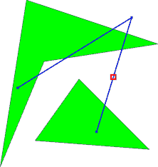

Home Page
F.A.Qs
Statistical Charts
Past Contests
Scheduled Contests
Award Contest
| Online Judge | Problem Set | Authors | Online Contests | User | ||||||
|---|---|---|---|---|---|---|---|---|---|---|
| Web Board Home Page F.A.Qs Statistical Charts | Current Contest Past Contests Scheduled Contests Award Contest | |||||||||
|
Language: Flight Safety
Description Safety is an important issue when planning flights. First and foremost, one should of course take every possible measure to make sure that the trip is uneventful and that no incidents occur. But even then, one should always be prepared for the worst and try to make sure that if an incident does happen, people’s chances of surviving are as high as possible. When making an emergency landing over water, the distance to the nearest land is a critical factor. In general, the further out on open waters, the worse are the odds of survival. Thus, one important safety parameter of a flight is how far away from the nearest land any part of the flight will take you. Your job is to write a program which, given a flight route, will determine this distance. To simplify matters, we model the world as a 2-dimensional plane rather than a sphere. We model continents as polygons, and a flight route as a sequence of key points connected by straight line segments. Flight routes always start and end strictly inside a continent, but intermediate key points may be located over water. Continents do not intersect themselves or touch each other.  Second sample case (furthest point marked with a square). Input On the first line one positive number: the number of testcases, at most 100. After that per testcase:
Every coordinate in the input is between Output For each test case:
Sample Input 2 1 2 -9 -6 5 1 3 0 16 -16 -12 17 -6 2 3 12 4 16 17 3 9 4 1 0 4 19 19 14 6 12 3 10 10 5 3 18 2 Sample Output 0.000000 2.942685 Source | ||||||||||
[Submit] [Go Back] [Status] [Discuss]
All Rights Reserved 2003-2013 Ying Fuchen,Xu Pengcheng,Xie Di
Any problem, Please Contact Administrator